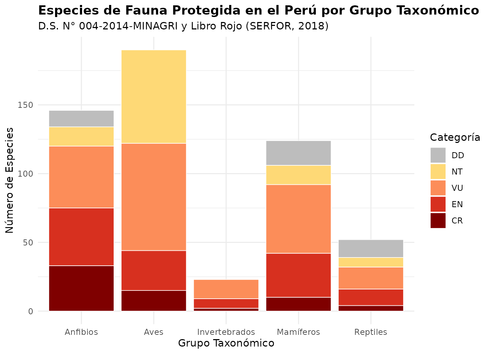

Diagnóstico por Grupos Taxonómicos, Ecorregiones y Amenazas
Source:vignettes/diagnostico_grupos_taxonomicos.Rmd
diagnostico_grupos_taxonomicos.Rmd1. Introducción: La Fauna Amenazada del Perú en Cifras
El Perú es reconocido como uno de los centros de megadiversidad biológica más sobresalientes del mundo. Esta extraordinaria riqueza faunística se enfrenta a crecientes presiones antropogénicas derivadas de la deforestación, el avance agropecuario, la minería aluvial y metálica, la contaminación por efluentes y pesticidas, las enfermedades infecciosas emergentes, el tráfico ilícito y el cambio climático global.
En esta viñeta se presenta una síntesis profunda y
cuantitativa del estado de conservación de la fauna peruana,
articulando los datos del paquete perufaunads004 con los
cinco capítulos monográficos introductorios del Libro Rojo de la
Fauna Silvestre Amenazada del Perú (SERFOR, 2018): -
Anfibios: Alessandro Catenazzi y Rudolf von May
(pp. 29–38). - Aves: Fernando Angulo Pratolongo
(pp. 159–168). - Mamíferos: E. Daniel Cossios Meza
(pp. 329–334). - Reptiles: José Pérez Z. (pp. 449–452).
- Invertebrados terrestres: José Antonio Ochoa y Diana
Silva (pp. 305–306).
2. Panorama General Multitaxa: DS 004-2014 vs. Libro Rojo
El marco legal del Decreto Supremo N° 004-2014-MINAGRI protege legalmente a 535 taxones, mientras que el Libro Rojo (SERFOR, 2018) recopila y analiza 528 taxones, incluyendo 381 fichas técnicas monográficas para las especies en situación de amenaza real (CR, EN, VU):
# Conteo de especies por clase y categoría en el DS 004-2014
resumen_ds004 <- ds004_fauna |>
count(clase, ds004_categoria_codigo) |>
tidyr::pivot_wider(
names_from = ds004_categoria_codigo,
values_from = n,
values_fill = 0
) |>
mutate(
Total_Amenazadas = CR + EN + VU,
Total_Protegidas = CR + EN + VU + NT + DD
) |>
relocate(clase, CR, EN, VU, Total_Amenazadas, NT, DD, Total_Protegidas)
kable(
resumen_ds004,
col.names = c("Grupo Taxonómico", "CR", "EN", "VU", "Amenazadas (CR+EN+VU)", "NT", "DD", "Total Legal (DS 004)"),
caption = "Especies de fauna silvestre según categoría de conservación en el D.S. N° 004-2014-MINAGRI."
)| Grupo Taxonómico | CR | EN | VU | Amenazadas (CR+EN+VU) | NT | DD | Total Legal (DS 004) |
|---|---|---|---|---|---|---|---|
| Anfibios | 33 | 42 | 45 | 120 | 14 | 12 | 146 |
| Aves | 15 | 29 | 78 | 122 | 68 | 0 | 190 |
| Invertebrados | 2 | 7 | 14 | 23 | 0 | 0 | 23 |
| Mamíferos | 10 | 32 | 50 | 92 | 14 | 18 | 124 |
| Reptiles | 4 | 12 | 16 | 32 | 7 | 13 | 52 |
df_plot <- ds004_fauna |>
mutate(ds004_categoria_codigo = factor(ds004_categoria_codigo, levels = c("DD", "NT", "VU", "EN", "CR")))
ggplot(df_plot, aes(x = clase, fill = ds004_categoria_codigo)) +
geom_bar(position = "stack", color = "white", linewidth = 0.3) +
scale_fill_manual(
name = "Categoría",
values = c(
"CR" = "#7f0000",
"EN" = "#d7301f",
"VU" = "#fc8d59",
"NT" = "#fed976",
"DD" = "#bdbdbd"
)
) +
labs(
title = "Especies de Fauna Protegida en el Perú por Grupo Taxonómico",
subtitle = "D.S. N° 004-2014-MINAGRI y Libro Rojo (SERFOR, 2018)",
x = "Grupo Taxonómico",
y = "Número de Especies"
) +
theme_minimal(base_size = 11) +
theme(
legend.position = "right",
plot.title = element_text(face = "bold")
)
Distribución de especies amenazadas (CR, EN, VU) y protegidas (NT, DD) por clase zoológica.
3. Diagnóstico Específico por Grupos Faunísticos
3.1. Anfibios: Hotspot Andino, Microendemismos y la Crisis del Bd
Basado en Alessandro Catenazzi y Rudolf von May (SERFOR, 2018).
- Riqueza excepcional: Con al menos 599 especies descritas al año 2015 (578 anuros, 3 salamandras y 18 cecilias), el Perú es uno de los líderes globales en batracofauna. Los Andes tropicales representan el área de mayor biodiversidad de anfibios en la Tierra.
- Tasa acelerada de descubrimiento: Entre 2001 y 2010 se describieron 123 especies nuevas en el país (un promedio de 13.7 especies por año), tendencia sostenida por herramientas moleculares y bioacústicas.
- Endemismo vertiginoso: El 80% de las 235 especies de anfibios que habitan por encima de los 1000 m s.n.m. son endémicas del Perú. En la familia Craugastoridae (géneros Phrynopus, Bryophryne, Pristimantis), los microendemismos son extremos: valles o cumbres separados por menos de 100 km exhiben un recambio del 100% de especies.
- Vulnerabilidad por modo reproductivo: El 60% de los anfibios amenazados en el Perú tienen larvas con desarrollo acuático (ligadas a quebradas montanas y lagos). Los géneros Atelopus (14 especies amenazadas) y Telmatobius (19 especies amenazadas) sufren los declives más alarmantes del Neotrópico.
- La tragedia del hongo quítrido (Batrachochytrium dendrobatidis - Bd): Mortandades masivas y colapsos enigmáticos en bosques nublados pristinos (incluso en el Parque Nacional del Manu, donde no se registran Atelopus tricolor, A. erythropus ni Telmatobius timens desde hace décadas).
-
Tráfico, sobreexplotación y especies invasoras:
- Consumo en mercados andinos: Ranas del género Telmatobius comercializadas para consumo humano (“extracto de rana”) presentan 100% de prevalencia de infección por Bd, actuando las cadenas comerciales como reservorios patógenos.
- Especies introducidas: La trucha arcoíris (Oncorhynchus mykiss), introducida en lagos y ríos andinos, depreda vorazmente renacuajos autóctonos; el kikuyo (Pennisetum clandestinum) y el eucalipto transforman los microhábitats altoandinos.
- La gran brecha espacial en el SINANPE: Un 32% de las especies de anfibios peruanos no habita dentro de ninguna Área Natural Protegida nacional, y un 16% adicional tiene menos del 10% de su distribución protegida. La mayoría de especies En Peligro Crítico no cuentan con cobertura formal del SINANPE, demandando con urgencia Áreas de Conservación Regional (ACR) y Privada (ACP).
# Consultar anfibios en Peligro Crítico con ficha técnica
anfibios_cr <- libro_rojo_fichas |>
filter(ficha_grupo == "Anfibios", grepl("^CR", ficha_categoria)) |>
select(canonical_name, family_name, ficha_categoria, autores) |>
head(6)
kable(anfibios_cr, col.names = c("Especie", "Familia", "Categoría / Criterios", "Autores de la Ficha"),
caption = "Muestra de anfibios peruanos categorizados En Peligro Crítico (CR).")| Especie | Familia | Categoría / Criterios | Autores de la Ficha |
|---|---|---|---|
| Ameerega planipaleae | Dendrobatidae | CR / B1ab (iii) | J. C. Chaparro, G. Chávez, V. Morales, P. Venegas |
| Atelopus andinus | Bufonidae | CR / A3ce | J. C. Chaparro, G. Chávez, V. Morales, P. Venegas |
| Atelopus dimorphus | Bufonidae | CR / A3ce | J. C. Chaparro, G. Chávez, V. Morales, P. Venegas |
| Atelopus epikeisthos | Bufonidae | CR / B1ab (iii) | J. C. Chaparro, G. Chávez, V. Morales, P. Venegas |
| Atelopus erythropus | Bufonidae | CR / A3ce | J. C. Chaparro, G. Chávez, V. Morales, P. Venegas |
| Atelopus eusebiodiazi | Bufonidae | CR / A2ac; B1ab (iii) | J. C. Chaparro, G. Chávez, V. Morales, P. Venegas |
3.2. Aves: Hotspots en Bosques Secos, Puna de Junín y Endemismos Críticos
Basado en Fernando Angulo Pratolongo (SERFOR, 2018).
- Tercer país en el mundo: Con 1852 especies de aves reportadas (Plenge, 2016; Remsen et al., 2017), el Perú solo es superado por Colombia y Brasil. En 20 años se describieron 12 especies nuevas para la ciencia y en una década se adicionaron 21 nuevos registros nacionales.
- Categorización: El D.S. N° 004-2014 categoriza 122 especies amenazadas (15 CR, 29 EN, 78 VU) y 68 Casi Amenazadas (NT), sin taxones en Datos Insuficientes (DD).
- Familias más afectadas: Las familias con mayor número de especies amenazadas son Furnariidae (12 especies) y Thraupidae (12 especies). La familia Cracidae (pavas, paujiles) concentra el mayor número de especies En Peligro Crítico (3: Penelope albipennis, Crax globulosa, Pauxi koepckeae), seguida de Diomedeidae (albatros) y Furnariidae con 2 especies CR cada una.
- El drama de las aves endémicas: De las 106 especies de aves endémicas del Perú, 39 están amenazadas (el 41% de todas las aves endémicas del país se encuentran en peligro de extinción).
-
Distribución de las amenazas por Ecorregión y EBA:
- Región Tumbesina (bosques secos del noroeste): Concentra el 13.1% de todas las aves amenazadas del Perú en apenas el 3.54% del territorio nacional.
- Bosques secos peruanos (Tumbes + Marañón): Suman casi un quinto (19.7%) de las aves amenazadas en solo el 5.3% del territorio del país.
- Puna de Junín: Posee 3 especies de aves amenazadas, las 3 son endémicas del Perú y las 3 están En Peligro Crítico (Podiceps taczanowskii, Laterallus jamaicensis tuerosi, etc.).
-
Las 7 aves prioritarias en Peligro Crítico y
endémicas:
- Penelope albipennis (Pava aliblanca - RLVS Laquipampa).
- Pauxi koepckeae (Paujil del Sira - RC El Sira).
- Podiceps taczanowskii (Zambullidor de Junín - RN Junín).
- Laterallus jamaicensis tuerosi (Gallineta de Junín - RN Junín).
- Taphrolesbia griseiventris (Colibrí ventrigris - PN Huascarán).
- Cinclodes palliatus (Churrete de vientre blanco - ZR Huayhuash).
- Polioptila clementsi (Perlita de Iquitos - RN Allpahuayo-Mishana).
# Identificar aves en Peligro Crítico presentes en el Libro Rojo
aves_cr <- libro_rojo_fichas |>
filter(ficha_grupo == "Aves", grepl("^CR", ficha_categoria)) |>
select(canonical_name, family_name, common_name, ficha_categoria)
kable(aves_cr, col.names = c("Especie", "Familia", "Nombre Común", "Categoría / Criterios"),
caption = "Aves en Peligro Crítico (CR) evaluadas en el Libro Rojo de Fauna Silvestre.")| Especie | Familia | Nombre Común | Categoría / Criterios |
|---|---|---|---|
| Cinclodes aricomae | Furnariidae | Churrete real | CR / B1ab |
| Cinclodes palliatus | Furnariidae | Churrete de vientre blanco | CR / B2ab, C2a |
| Crax globulosa | Cracidae | Paujil carunculado, piuri, paujil picudo, mamaco. | CR / A2bcd, C1 + 2a (i) |
| Fulica rufifrons | Rallidae | Gallareta de frente roja | CR/ B1ab+2ab, C2a, D |
| Grallaria ridgelyi | Grallariidae | Tororoi jocotoco | CR / B1ab, C2a |
| Laterallus jamaicensis tuerosi | Rallidae | Gallineta de Junín | CR / B1ab |
| Pauxi koepckeae | Cracidae | Paujil del Sira, paujil de cerro, piuri, paujil cornudo, quiyuri | CR / A3d, B1ab, C1 |
| Penelope albipennis | Cracidae | Pava de ala blanca, pava aliblanca | CR / C2a, D |
| Phoebastria irrorata | Diomedeidae | Albatros de las Galápagos | CR / A2d, B2ab (ii, iii, v) |
| Podiceps taczanowskii | Podicipedidae | Zambullidor de Junín | CR / B1ab, C2a |
| Polioptila clementsi | Polioptilidae | Perlita de Iquitos | CR / B1+2 (i, ii), C2a (i, ii), D1+2 |
| Pterodroma phaeopygia | Procellariidae | Petrel de las Galapagos | CR / A2bce |
| Rhea pennata | Rheidae | Suri, Ñandú petizo | CR / A2cd, C2a(i) |
| Sterna hirundinacea | Sternidae | Gaviotín sudamericano, terrecle | CR / A2ad + 3ad, B2ab, C1 + 2a |
| Taphrolesbia griseiventris | Trochilidae | Cometa de vientre gris | CR / B1ab, C2a |
| Thalassarche eremita | Diomedeidae | Albatros de Chatham | CR / B2ab |
3.3. Mamíferos: Cuarto País Global y Matriz de Presiones Antrópicas
Basado en E. Daniel Cossios Meza (SERFOR, 2018).
- Riqueza global: Con 519 especies analizadas (Wilson y Mittermeier, 2009; Pacheco et al., 2009; Aquino et al., 2015), el Perú representa el 9.72% de la mastofauna mundial, ocupando el cuarto lugar en el mundo (tras Brasil, Indonesia y China) y el segundo en Sudamérica.
- Endemismo: Alberga 70 especies endémicas (noveno puesto mundial y tercero sudamericano).
- Lista de amenazados: El Perú registra 92 especies de mamíferos amenazados (10 CR, 32 EN, 50 VU), ocupando el segundo lugar sudamericano y el quinto entre los países megadiversos.
-
Órdenes con mayor impacto:
- Mayor número absoluto: Rodentia (32 especies), Chiroptera (16 especies) y Primates (15 especies).
- Órdenes desproporcionadamente amenazados: Cingulata (armadillos: 42.9% amenazados), Primates (31.3%) y Cetartiodactyla terrestres (40.0%).
- Órdenes con especies en Peligro Crítico (6): Primates, Rodentia, Soricomorpha, Chiroptera, Perissodactyla y Cetartiodactyla.
-
Vulnerabilidad por Ecorregión:
- Yunga: Concentra el mayor número absoluto de mamíferos amenazados (46 especies, 21.4%).
- Páramo (26.1%) y Puna (21.9%): Exhiben la mayor proporción relativa de amenaza.
-
Matriz de amenazas sobre la mastofauna:
- Agricultura y ganadería: Causa número 1 en el país, afectando al 68.5% de las especies (63 especies).
- Forestería y tala: Afecta al 37.0% (34 especies).
- Caza de subsistencia y carne de monte: Afecta al 25.0% a nivel nacional, elevándose al 54.2% en la Selva Baja.
- Minería aluvial y metálica: 18.5%.
- Caza tradicional y medicinal: Sobresale en el Bosque Seco (42.9%).
- Expansión urbana y caza por temor o conflicto con ganado: Afecta al 50% y 37.5% de las especies en el Desierto Costero, respectivamente.
# Órdenes de mamíferos amenazados en el DS 004
mamiferos_ordenes <- ds004_fauna |>
filter(clase == "Mamíferos") |>
count(genus, ds004_categoria_codigo) |>
head(10)3.4. Reptiles: Sesgos de Muestreo, Endemismo Costero y Criterio B1
Basado en José Pérez Z. (SERFOR, 2018).
- Riqueza de reptiles: Con 483 especies reportadas (Uetz, 2016), el Perú representa el 4.6% de la riqueza global de reptiles (>10,000 especies).
- Evolución de especies protegidas: Pasó de 44 especies en 1999 (categorías no UICN) a 26 especies en 2004, y se duplicó a 52 especies protegidas en 2014 (43 en categorías de amenaza real: 4/6 CR, 12/16 EN, 16/21 VU, además de NT y DD).
-
Sesgos metodológicos e influencia de los EIA:
- El fuerte incremento de especies protegidas en 2014 no respondió a un deterioro repentino, sino a una mayor cobertura de evaluación.
- Existe un marcado sesgo hacia saurios (lagartijas) y especies de la costa y vertientes andinas, derivado directamente de los inventarios de Línea Base de Evaluaciones de Impacto Ambiental (EIA) de proyectos mineros, energéticos y de infraestructura del siglo XXI (Pérez, 2018).
-
La paradoja del Desierto Costero vs. Amazonía:
- El Bosque Tropical Amazónico (BTA) tiene la mayor riqueza total de reptiles del país, pero pocas especies amenazadas (10 especies, <10% de su fauna), debido a que sus especies poseen distribuciones geográficas amplias en la cuenca amazónica.
- En contraste, el Desierto Costero (DCO) alberga 16 especies amenazadas (30% de su riqueza faunística). Esto se explica por la intensa presión demográfica humana (>50% de la población peruana reside en la costa) y por un altísimo grado de especialización y aislamiento: el 88% de los saurios de la costa peruana son endémicos de esa región, y el 58% son endémicos exclusivos del Perú.
- Criterios UICN: El 86% de las especies de reptiles amenazados fueron evaluadas casi exclusivamente bajo el Criterio B1 (extensión de presencia restringida), reflejando la carencia absoluta de censos poblacionales cuantitativos.
3.5. Invertebrados Terrestres: La Frontera del Conocimiento
Basado en José Antonio Ochoa y Diana Silva (SERFOR, 2018).
- La inmensidad desconocida: Los artrópodos representan el 80% de todas las especies animales conocidas en el planeta. En el Perú se estima que existen más de 41,300 especies de insectos (Aguilar et al., 1995), con más de 3800 a 4200 especies de mariposas (Lamas, 2003; el país más diverso del planeta en este grupo). Localidades como Pakitza (Manu) y Explorer’s Inn (Tambopata) ostentan récords mundiales en riqueza de mariposas, libélulas, abejas y escarabajos tigre.
-
De la invisibilidad a la protección legal: En el
D.S. N° 034-2004-AG no figuraba ninguna especie de invertebrado. El
D.S. N° 004-2014-MINAGRI y el Libro Rojo marcaron el hito de
proteger formalmente a 21 especies:
- 17 del phylum Arthropoda (10 Insecta, 5 Arachnida, 2 Diplopoda).
- 1 del phylum Mollusca (Megalobulimus lichtensteini, caracol congompe de Cajamarca y Amazonas).
- 3 del phylum Onychophora (gusanos aterciopelados: Oroperipatus koepckei, O. omeyrus, O. peruvianus).
-
Especies en Peligro Crítico:
- Tingomaria hydrophila (Opilión cavernícola de Huánuco).
- Sulcophanaeus actaeon (Escarabajo pelotero verde o acatanka, Junín).
- Cuello de botella taxonómico: Aguda escasez de taxónomos especialistas en el Perú, colecciones científicas con recursos limitados y dependencia obligatoria de museos extranjeros en Europa y Norteamérica para examinar material tipo. Gran riesgo de que muchas especies se extingan antes de ser formalmente descritas (Wilson, 1988).
# Especies de invertebrados en el DS 004
invertebrados_ds004 <- ds004_fauna |>
filter(clase == "Invertebrados") |>
select(scientific_name, ds004_categoria_codigo, common_name)
kable(invertebrados_ds004, col.names = c("Nombre Científico", "Categoría", "Nombre Común"),
caption = "Invertebrados terrestres legalmente protegidos en el Perú (D.S. N° 004-2014-MINAGRI).")| Nombre Científico | Categoría | Nombre Común |
|---|---|---|
| Tingomaria hydrophila | CR | opilión |
| Sulcophanaeus actaeon | CR | pelotero verde, acatanka |
| Altinote rubrocellulata | EN | mariposa |
| Bostryx aguilari | EN | NA |
| Caloctenus oxapampa | EN | araña |
| Charinus koepckei | EN | araña látigo |
| Dynastes neptunus | EN | escarabajo torito |
| Megalobulimus lichtensteini | EN | congompe |
| Orobothriurus atiquipa | EN | alacrán |
| Argia inculta | VU | caballito del diablo |
| Bostryx scalariformis | VU | NA |
| Dynastes hercules | VU | escarabajo hércules, mao |
| Erythrodiplax cleopatra | VU | libélula |
| Macrodontia cervicornis | VU | escarabajo longicornio |
| Macrodontia itayensis | VU | escarabajo longicornio |
| Megasoma actaeon | VU | escarabajo torito, tomboso |
| Oroperipatus koepckei | VU | gusano aterciopelado, onicóforo |
| Oroperipatus omeyrus | VU | gusano aterciopelado, onicóforo |
| Oroperipatus peruvianus | VU | gusano aterciopelado, onicóforo |
| Pamphobeteus antinous | VU | tarántula |
| Pycnotropis unapi | VU | milpiés |
| Thrinoxethus junini | VU | milpiés |
| Titanus giganteus | VU | escarabajo gigante |
4. Síntesis y Recomendaciones Estratégicas de Conservación
- Priorización ecorregional en las Yungas y Bosques Montanos: Las vertientes orientales de los Andes (Yungas) concentran el mayor número absoluto de vertebrados amenazados (anfibios de quebrada, aves de sotobosque y mamíferos medianos), donde la expansión agropecuaria y la fragmentación deben detenerse con máxima prioridad.
- Urgencia en la Costa y Bosques Secos: La Región Tumbesina y el Desierto Costero, a pesar de su reducida superficie territorial, contienen densidades desproporcionadas de especies amenazadas y altos endemismos (saurios y aves terrestres), fuertemente impactados por la expansión urbana, la agricultura no sostenible y la caza por temor.
- Control del hongo quítrido (Bd) y especies invasoras: Es imperativo monitorear patógenos emergentes en las redes fluviales andinas y regular la introducción y dispersión de la trucha arcoíris en cuencas con presencia de anfibios amenazados (Telmatobius, Atelopus).
- Fortalecimiento de la taxonomía nacional: Urge financiar inventarios biológicos en invertebrados terrestres y micromamíferos, así como modernizar las colecciones entomológicas y zoológicas nacionales.
Referencias
- Aguilar, P. G., et al. (1995). Sinopsis sobre la entomofauna peruana. Revista Peruana de Entomología, 37, 1–9.
- Angulo Pratolongo, F. (2018). Actualización del conocimiento del estado de conservación de las aves del Perú. En: Libro Rojo de la Fauna Silvestre Amenazada del Perú (pp. 159–168). SERFOR, Lima.
- Catenazzi, A., & von May, R. (2018). Estado de conservación de los anfibios en el Perú. En: Libro Rojo de la Fauna Silvestre Amenazada del Perú (pp. 29–38). SERFOR, Lima.
- Cossios Meza, E. D. (2018). La diversidad de mamíferos del Perú en el contexto mundial. En: Libro Rojo de la Fauna Silvestre Amenazada del Perú (pp. 329–334). SERFOR, Lima.
- MINAGRI (2014). Decreto Supremo N° 004-2014-MINAGRI. Diario Oficial El Peruano, 8 de abril de 2014.
- Ochoa, J. A., & Silva, D. (2018). Invertebrados terrestres amenazados del territorio peruano. En: Libro Rojo de la Fauna Silvestre Amenazada del Perú (pp. 305–306). SERFOR, Lima.
- Pérez Z., J. (2018). Evaluación del Estado de Conservación de los Reptiles presentes en el Perú. En: Libro Rojo de la Fauna Silvestre Amenazada del Perú (pp. 449–452). SERFOR, Lima.
- SERFOR (2018). Libro Rojo de la Fauna Silvestre Amenazada del Perú. Servicio Nacional Forestal y de Fauna Silvestre, Lima, Perú. 548 pp.